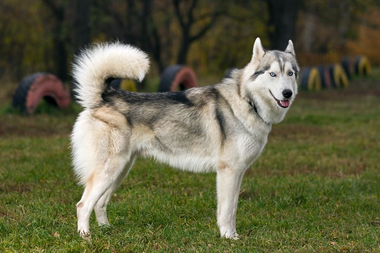

Anjing Husky
Siberian husky adalah salah satu ras anjing populer di dunia. Siberian husky adalah anjing Arktik yang dibiakkan untuk menarik kereta luncur dan menggembalakan rusa kutub. Siberian husky adalah anjing yang kuat, berukuran sedang, memiliki bulu tebal untuk menahan Selain itu, anjing Siberian husky mempunyai mata biru yang tajam atau multi-warna dan wajah yang mencolok, bahkan seram, yang menambah daya t arik anjing Siberian husky.
Tak heran, penampilan Siberian husky ini sering kali membuatnya disebut mirip serigala atau anjing berpenampilan serigala. Penampilan Siberian husky yang mirip dengan serigala bukan tanpa alasan. Seperti diketahui, setiap ras anjing di dunia ini merupakan keturunan serigala yang telah mengalami domestikasi atau penjinakan. Meski begitu, nyatanya Siberian husky hanya mewarisi lebih sedikit DNA dari serigala daripada beberapa ras anjing lainnya seperti Shiba Inu dan Chow Chow.
Anjing Siberian husky datang dalam berbagai warna, dari hitam ke putih dan dalam banyak pola. Untuk mata, anjing Siberian husky memiliki ragam warna, dari biru, coklat, kombinasi keduanya, atau salah satunya. Selain itu, ras anjing ini juga dikenal memiliki bulu sangat tebal yang terdiri atas lapisan bawah yang lembut serta lapisan luar yang lurus dan halus. Bulu di antara jari-jari kakinya membantu Siberian husky mencengkeram es serta menjaganya tetap hangat. Siberian husky betina memiliki berat antara15-22 kilogram dengan tingginya 50-55 sentimeter. Sedangkan peantan memiliki berat 20-27 kilogram dengan tinggi mencapai 53-58 sentimeter.